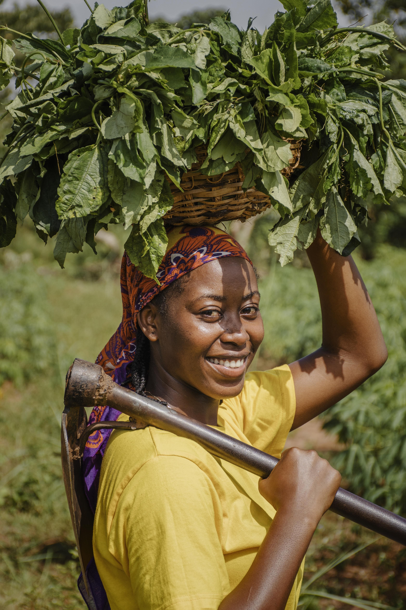
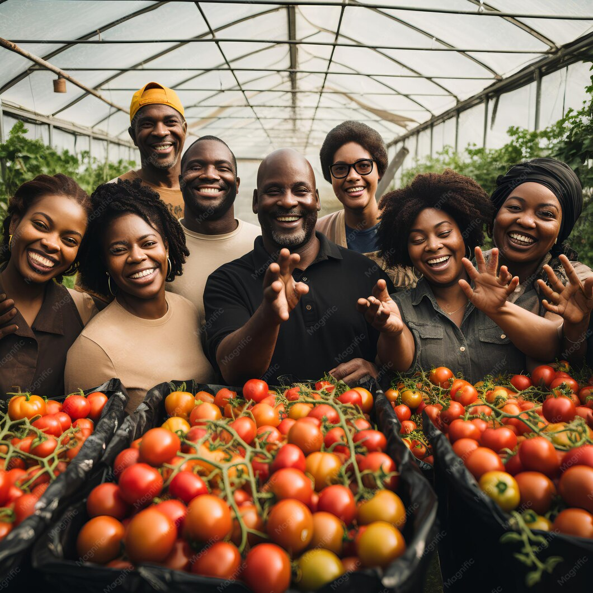

le club agroMakers
Un cadre plus exclusif pour aller plus loin : échages ciblés, mises en relation qualifiées et accès à des opportunités à forte valeur ajoutée
Platforme d'information, de connexion, et d'opportunités pour les acteurs de l'agri-business en Afrique.
L'agriculture africaine présente un potentiel considérable, mais de nombreux projets peinent encore à se développer.Non pas par manque d'opportunités,mais en raison d'un accès limité à l'information stratégique,aux réseaux et aux mécanismes de financement.
Agromakers est né pour répondre à ce défi.
Nous construisons une plateforme qui permet aux acteurs de se connecter de manière pertinente et d'accéder à des opportunités concrètes.

L'agriculture est l'un des secteurs les plus stratégiques pour le développement de l'Afrique. Pourtant trop de projets restent limités par un manque d'accès à l'information, aux ressources et aux bonnes connexions.
Avec Agromakers, nous avons voulu créer un espace capable de rapprocher les acteurs, de rendre l'information plus utile et de faire émerger des opportunités concrètes.
Notre ambition est claire : contribuer à structurer un écosystème agricole plus dynamique, plus connecté et tourné vers l'avenir.

Un cadre plus exclusif pour aller plus loin : échages ciblés, mises en relation qualifiées et accès à des opportunités à forte valeur ajoutée
accès prioritaire aux évènements
Réseau qualifié
opportunités ciblées
formations spécialisées
rencontres & panels
Le sous-investissement chronique dans l'agriculture africaine : une bombe à retardement que la crise d'Ormuz vient d'allumer
Intégrez un écosystème dédié à l'agriculture et à l'agri-business